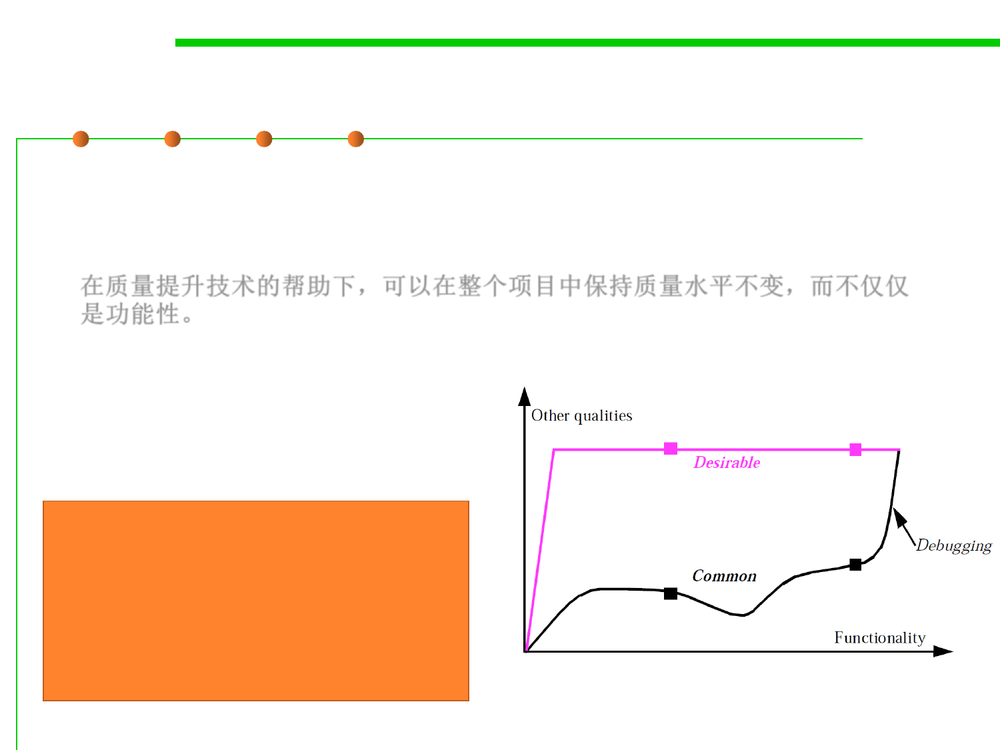

1.2 Quality Objectives of Software Construction
External 9: Functionality
▪ What Osmond suggests (the color curve) is, aided by the quality-
enhancing techniques of OO development, to maintain the quality
level constant throughout the project for all aspects but functionality.
在质量提升技术的帮助下，可以在整个项目中保持质量水平不变，而不仅仅
是功能性。
▪ You just do not compromise on reliability, extendibility and the like:
you refuse to proceed with new features until you are happy with
the features you have.
Chapter 2 (Agile, SCM)
Start with a small set of key features
with all quality factors considered.
Add more features gradually during
development process and guarantee
the same quality as key features.
Osmond’s curves